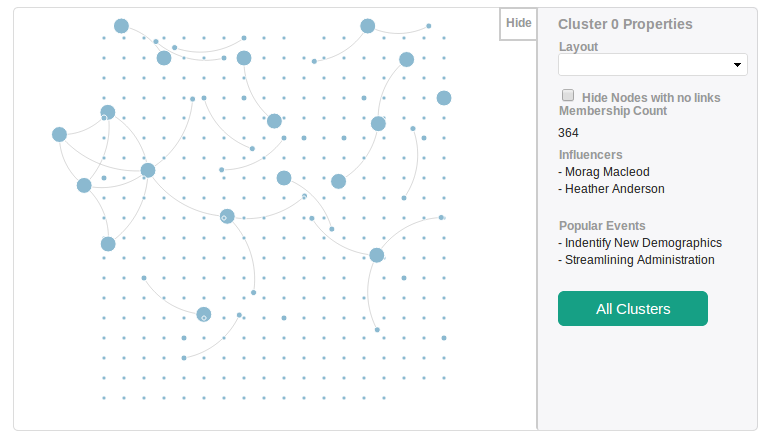
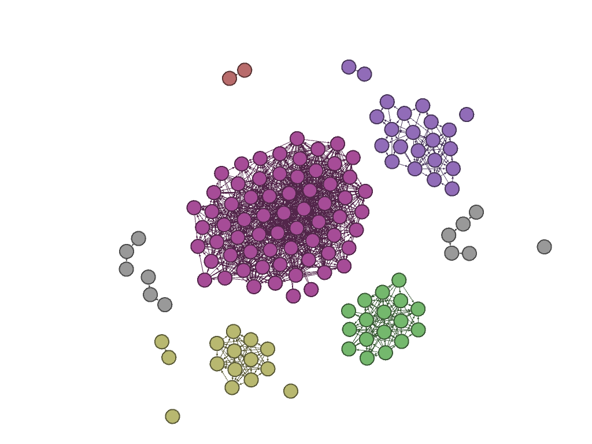
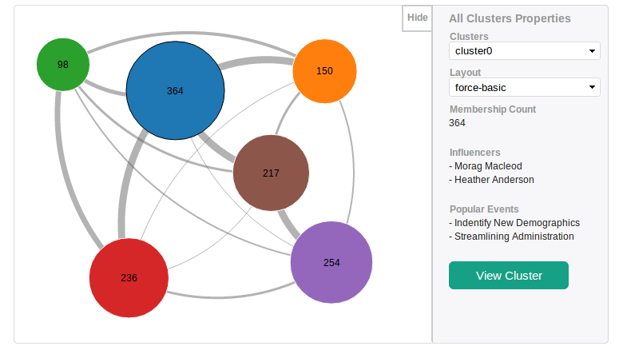

Visualising Social Networks (Feusd)
SAAS for Membership Organisations
Provides
- Social Networking
- Personal Recommendations
- Community Generated Content
Members Activity and Network
Understand
- Network dynamics as a whole
- Members’ personal network and their role
Provide
- Better member experience
- More targeted marketing
- Build communities
Data And Visualisation
CPD foundation - Data
- 3160 users
- 126 connections
- Sparse connections with islands of cliques

Data And Visualisation
Visualisation
- Provide an overview
- Account both hairball and sparse networks
- Ability to zoom in on details

Visualisation
Provide an overview
- Members are grouped by activity
- k-means clustering
- Different layouts

Visualisation
Inside Member Groups
- Force directed layout(d3.js)
- Using constraint-based optimisation(webcola)
- Reduce jitters and overlapping nodes
- Zoom/Pan and drag/drop nodes
- Node sizes according to member importance
Summary
- Overview of communities based on activities/interests; gives us a context to explore further inside the groups
- Further analysis to see how the groups are different
- Importance of nodes - influencers
- Popular content
- Other metrics - location, expertise
- Understand a person’s network and their role
- Hopefully help the organisation make better decisions and build communities
- Better social experience and relevant content
←
→
/
#